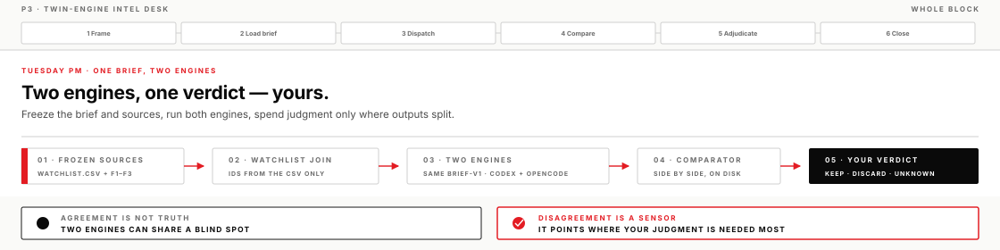
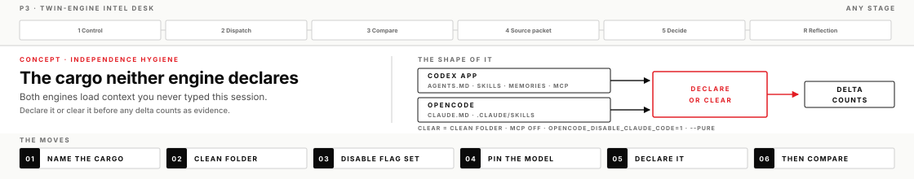
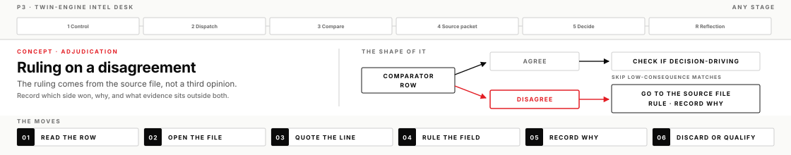

You'll run one frozen brief through two different engines, put their outputs side by side, and rule on every disagreement yourself. The provider-and-model split adds one dimension of diversity; any stronger independence claim must name and show the path separation that earns it. Agreement is not truth — but disagreement shows you exactly where your judgment is needed.
Somewhere in a normal work week, a model drafts something you pass upward — a status rollup, an extraction from documents you didn't have time to read twice, a summary that becomes someone else's operating picture. When that draft is wrong, the error arrives wearing your name. The trap is quiet: a model's fluent answer feels like a second opinion because it's phrased like one. It isn't. It's one witness, interviewed once.
The countermeasure is a desk, and you build it now: the same extraction demand, run verbatim through two engines that share neither product nor model family, a comparator that surfaces every place they differ, and a ruling — from you, on evidence — for each one. An engine here means a model running inside a harness product; today's two are the Codex app and OpenCode running Grok on your xAI key. By the end you own the whole circuit, and it reruns on Monday's real work with nothing but a new corpus.
What you will leave with
BRIEF-v1 run unchanged on the Codex app and OpenCode — two raw outputs on disk you can point to
Run identity declared for both engines — model id, version, folder, and the context each one carried
A filled comparator with ≥3 material disagreements, or written proof you searched for them
At least one model-asserted claim killed on non-model evidence — and the kill test in your hands as a repeatable move
An adjudication note a supervisor could act on cold
The habit set: single-engine ban on consequential claims, comparator over vibes, kills that name their evidence
Stretch: Many Minds — a baseline, a subagent synthesis, and a delta sheet that defends whether parallel actually helped
Before you start
Operator templates present in your Codex app project (DIRECTION_BRIEF.md, OPERATOR_LOG.md)
Both engines alive on your keys: the Codex app opens a chat; opencode starts from a terminal
You know which track you ran in P2 — the desk uses the same one
The Grok model id from the pin within reach — you'll pin it with -m
Lead operate-along
The lead runs this same page on screen — brief co-written live, the mission run in a build chat you can see, accepts and rejects narrated. You still run your own chair, and you check a box when you finish the step, not when you watch it.
Stretch · Many Minds, one commander
After the required twin-engine outcomes are complete: baseline single-chat review, then parallel subagents, then a delta sheet that defends whether parallel helped. Three artifacts under instruments/p3_multi_agent/out/. Earned kills need corpus evidence. Guide: Many Minds walkthrough. Naming lock: subagent ≠ second engine ≠ second human.

The craft under the desk
Read these once before you start, then come back to whichever idea a disagreement — or a suspicious agreement — puts to work.
Agreement is not truth; disagreement is a sensor
When two engines return the same answer, it's tempting to call the answer confirmed. What a match actually establishes is narrower: two systems produced the same output. If their failure modes overlap, they can match for shared-wrong reasons — and their failure modes do overlap. Both models trained on overlapping public text, both read the exact corpus you handed them, and both are optimized to produce fluent, confident prose. Where the corpus is thin or ambiguous, each fills the gap with the most plausible completion — and the most plausible completion is often the same wrong guess. A match therefore tells you a claim is either well-supported or a shared blind spot, and it cannot tell you which. That's why matched claims still get sample-checked.
Disagreement is the more useful signal, and it's worth being precise about what it is. Two different model families under two different harnesses diverge mostly where the evidence underdetermines the answer — a contradiction between sources, a gap the brief doesn't cover, a synonym the status vocabulary maps two ways. So each disagreement row is a pointer to exactly the claims where mechanical processing ran out and judgment has to take over. That is what the second engine buys for its cost: not a better answer, but a map of where your attention belongs. An operator who reads the comparator top to bottom spends twenty minutes; an operator who reads only the disagreement rows spends five and misses nothing the engines could have caught — the shared blind spots remain, and they are exactly what the sample-check on matched claims is for.
The failure smell on this idea has a name in the lesson outcomes: “they basically agreed.” If that sentence appears without a table behind it, no comparison happened — an impression happened. The other failure is subtler: treating every split as proof one engine is defective. Usually neither is defective; the evidence is genuinely thin, and the honest ruling is UNKNOWN with a note saying why.
Independence hygiene — the cargo neither engine declares

For this controlled comparison to support a claim about engine differences, both engines must receive the same frozen job and every material difference in their run paths must be declared. Neither engine helps you with this. The Codex app loads AGENTS.md from whatever folder you open as the project — including the P2 project whose harness you changed — plus %USERPROFILE%\.codex\AGENTS.md, any skills it discovers, and memories if you enabled them. OpenCode, for its part, reads %USERPROFILE%\.claude\CLAUDE.md and .claude\skills unless OPENCODE_DISABLE_CLAUDE_CODE=1 is set — pre-work set it, and today is the day that setting earns its keep. Neither product announces any of this at run time. The cargo is invisible until you go looking.
Here is what going wrong looks like, because it's the most common way this desk fails: you run the brief inside your P2 project, the Codex output comes back noticeably sharper, and you conclude the Codex app is the stronger engine. That comparison is contaminated: the product and model family changed, but so did the instruction path, so the observed delta cannot be attributed to the engine split. The run is still evidence about the combined setups; it is not clean evidence that one engine is stronger. An advantage you didn't declare looks exactly like a capability you don't have.
The discipline is declare or clear, and either is honest — silence is the only wrong answer. Clear means a fresh folder holding only the frozen corpus, the disable flag set (OPENCODE_DISABLE_CLAUDE_CODE=1), and installed plugins held out of the OpenCode run with OPENCODE_PURE=1 alongside --pure — some builds silently ignore the flag on its own. Declare means writing the run identity down like a lab notebook entry: engine, model id, version, folder, and which instruction files, skills, and memories were live. The comparator's first table exists for exactly this, and it gets filled before any side-by-side row. At work this habit generalizes far past today's two products: any time you compare AI outputs — models, prompts, vendors, versions — the first question is what each side was carrying.
The frozen brief is the control
You're about to attribute output differences to the engines. That attribution is defensible only if the brief, corpus files, join rule, and other outcome-relevant conditions outside the named provider-and-model split are held fixed. Any residual difference stays in the run identity as a competing explanation. In experiment terms the brief is the control: the thing held fixed so the remaining variation means something. This is why BRIEF-v1 is frozen and why editing it mid-run is the one move that ruins the afternoon quietly. A clarification you give one engine and not the other converts your comparison into a story about your prompting.
Read the brief once as a piece of engineering and you'll see each rule closing a degree of freedom. WatchIDs must come from watchlist.csv — so the join is deterministic and no model gets to guess which entity a paragraph is about. Status must be one of four values — so synonyms can't blur into unfalsifiable prose. Every factual cell needs a quote of twenty words or fewer — so checking a claim takes seconds, not minutes. Contradictions are kept, not resolved — so the model can't silently pick a side of a dispute that's yours to rule on. Unlisted entities are fenced into their own section — so scope creep is visible instead of woven in. Remove any of these and the comparator fills with noise you can't adjudicate.
An underspecified brief fails differently, and the failure is instructive: both engines drift, but in different directions, and the disagreement count explodes. When that happens the divergence is telling you about the brief, not the engines — which is why a flood of disagreements is a diagnostic, not a jackpot. If you find yourself wanting to tighten the wording, the honest path is a labeled variant: BRIEF-v2, run as a stretch experiment on both engines, with the disagreement-rate change recorded. That experiment — v1 versus v2, measured — is one of the sharpest things you can bring back to any prompt-writing argument at work.
Adjudication is a ruling, not an average

When the engines split on a field, three tempting moves are all wrong: ask a third model to break the tie, keep the answer that sounds more confident, or split the difference. All three keep the decision inside model-land, where the error was born. The correct move is shorter than any of them — open the source file. The brief's quote rule means each engine has told you where it thinks its evidence lives; go there and read. Then rule the field: which side wins, why, and what evidence outside either model settles it. Write the ruling in the verdict column. If the sources genuinely don't settle it, UNKNOWN is a ruling too — often the most honest one on the sheet.
For claims that resist a quick source check — especially claims both engines agree on — there's a sharper instrument: the kill test. Copy the corpus, delete the file a claim cites, and rerun the brief — the stale-source test from P1's brief machine, re-aimed at a single claim instead of the whole machine. A grounded claim dies with its evidence: the row goes UNKNOWN or the field empties. A claim that survives losing its own source was never resting on it — the model was confabulating, generating a plausible assertion and decorating it with a citation after the fact. That's a kill, and it's the strongest kind, because you demonstrated the failure instead of suspecting it. One earned kill teaches you more about a model's evidence discipline than fifty smooth successes.
Adjudication done this way produces a specific artifact: a note a supervisor can act on cold, with every ruling walkable back to a file and a line. That's the difference between “the AI said” and intelligence work. On a real desk the rulings are what you're paid for — the engines are interchangeable; the verdict column is you.
Three instruments that look alike
Once you've run a second engine, it's easy to blur it together with two neighbors that look similar and aren't. A second engine is a different product and model family given the same frozen job. It adds provider-and-model diversity and can expose a failure the first engine does not share. It does not establish whole-path independence; that requires a named failure, evidence that the path capable of causing it is separated, and a record of what remains shared. A subagent is a specialist the Codex app spawns under your commander chat — same product and model family, so it buys division of labor and clean context, not a new provider-and-model path. Any narrower separation still has to be named and evidenced. A second human brings actual judgment and accountability — the one thing neither machine instrument carries, which is why a human challenger stays on your transfer list even after this desk works.
Instrument
What it buys
What it cannot do
Second engine (OpenCode)
Provider-and-model diversity; another failure surface to compare
Own the verdict; guarantee truth; establish whole-path independence
Subagent (Codex app)
Parallel specialist lenses; keeps the main chat clean
Add provider-and-model diversity; establish independence from head count
Second human
Judgment and accountability; a potentially different challenge path
Scale to every claim; establish independence without disclosing evidence path, role, and incentives
Here is what mistaking one for another looks like: three subagents converge on a finding and the report upstairs calls it “independently confirmed.” It is not independent confirmation: the same product, model family, and cargo leave the dominant paths shared. The convergence can still surface useful issues, but head count adds no corroborative weight. The Many Minds stretch puts the middle row in your hands: one commander, three parallel lenses, and a measured answer to whether parallel helped. Whatever mix of instruments you run, the merges and the kills stay with the commander — the sentence to be able to say cold is subagent ≠ second engine ≠ second human.
Before you move on
A completed lesson means more than a successful run. Evidence must survive adversarial review — and the named not-yets for this desk are one engine only, “they basically agreed,” and a verdict without a comparator. Full list: these P3 lesson outcomes.
If you get stuck
OpenCode won't run the brief. Read the error body before touching the install: 429 or quota means a capped key wearing an auth-failure costume, and a brand-new key does nothing until its ACLs attach. Neither is fixed from your seat. While you wait, keep working the Codex side and prep the comparator.
The engines agree on everything. That's not a failed run. First confirm both sides ran clean — shared cargo manufactures agreement. Then document the search, sample-check the strongest matches, and run one kill test; the outcome list accepts proof of search in place of three rows.
The comparator is eating the block. You're logging cosmetic rows. Narrow the data scope — fewer fields, material disagreements only — and never the judgment standard. If a concept is what's blocking you, ask the lead to diagram it live, then continue on your own chair.